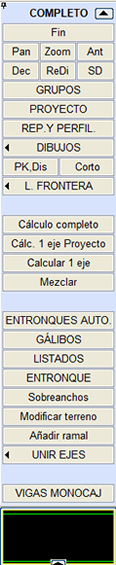

| |
|
TÜM İŞLEMLER
|
Genel Bilgiler:  Tüm İşlemler menüsü, harita verilerinin bellekten serbest bırakıldığı bir ortama erişim sağlar, ancak daha sonra sunulan menülerden birinde çizim yapılabilir. Çizimler:
Hesaplamalar: Tüm Proje Hesabı: Proje Hesabı'na bir kısayoldur. Tek Eksen Proje Hesabı: Düşey Güzergah menüsündeki Mevcut Proje Hesabı seçeneği gibidir. Tek Eksen Hesabı: Ekranda seçilen eksenin hesaplanması. |
||||||||||||||||||